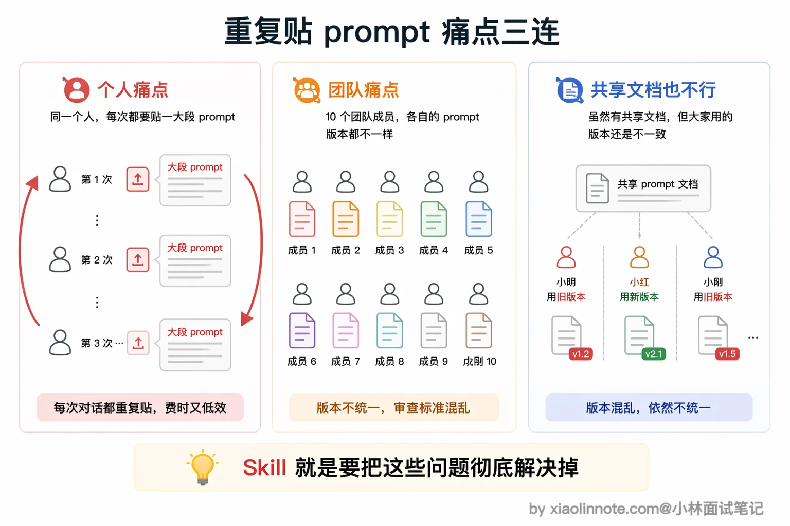
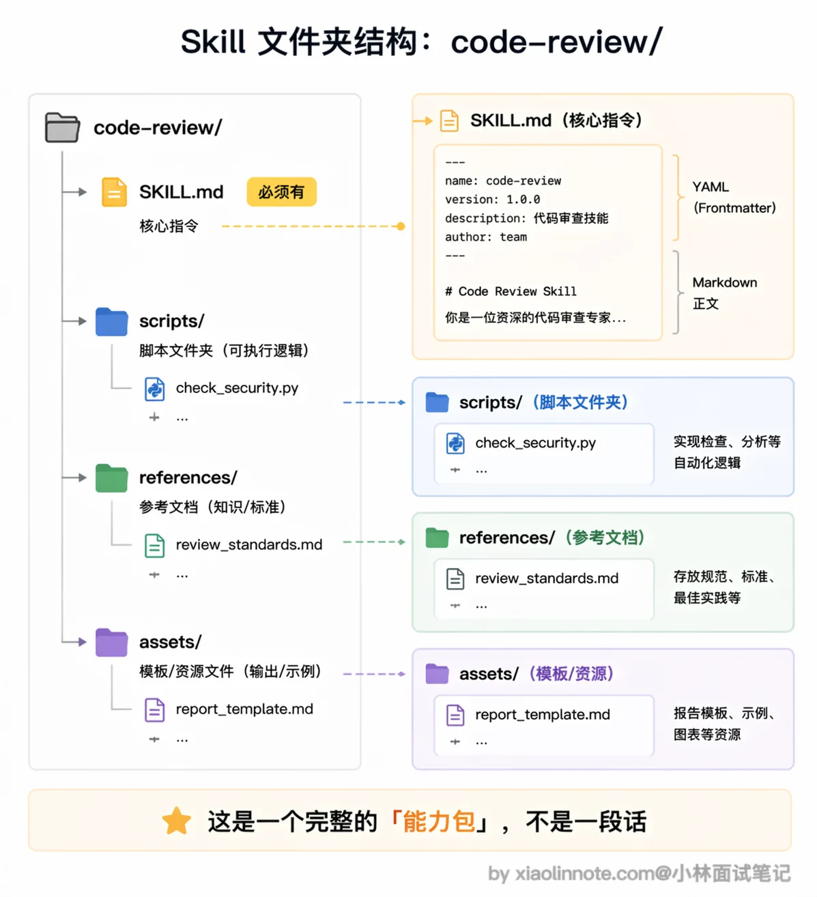
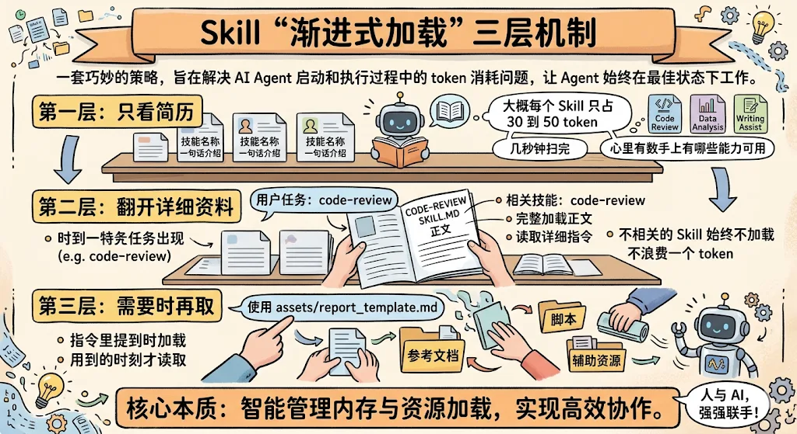
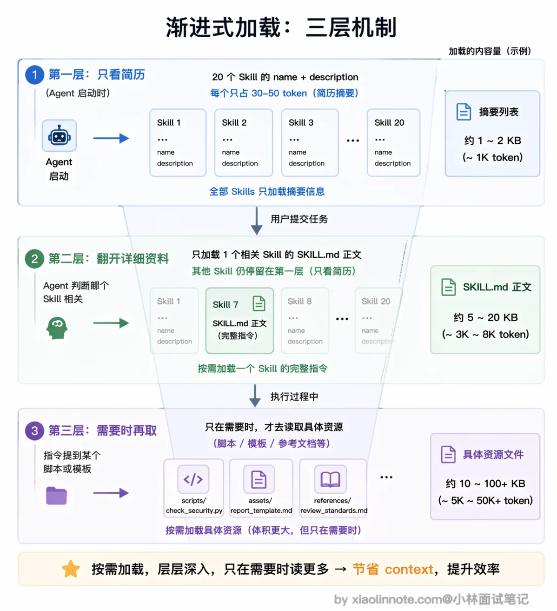
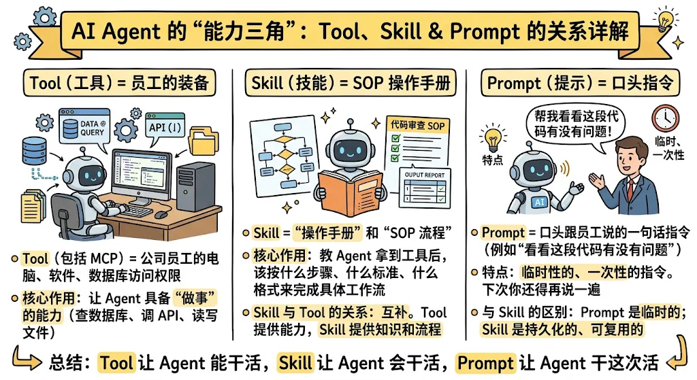
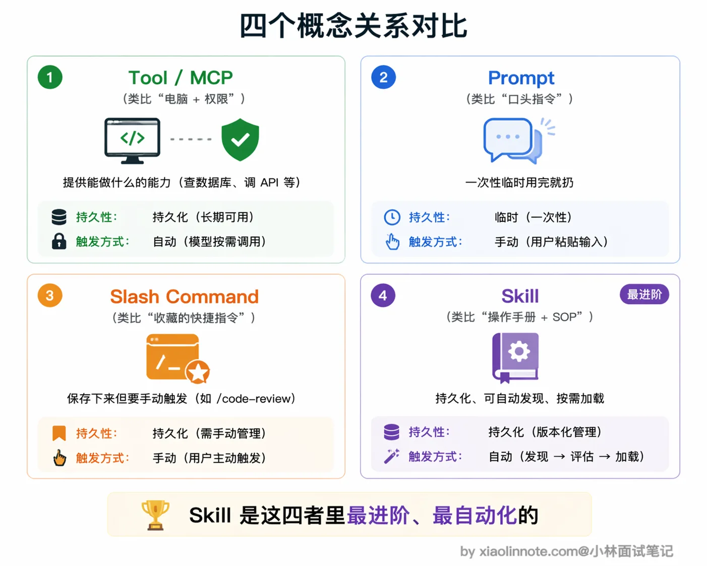
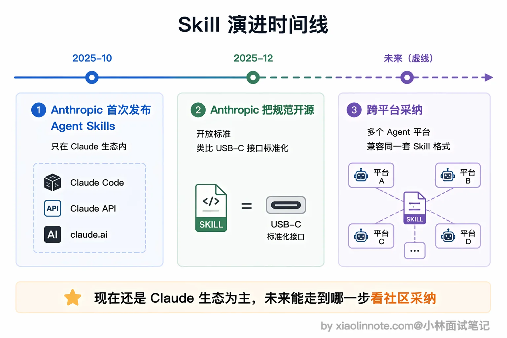

Skill 是什么？
👔面试官：说说 Agent Skill 是什么？
🙋♂️我：Skill 就是提示词嘛，把常用的 prompt 保存下来，下次用的时候直接贴上去就行了，跟复制粘贴差不多。
👔面试官：就是「复制粘贴 prompt」？那我每次开新对话都要手动贴一遍，团队里十个人每个人贴的还不一样，这算什么「能力」？你觉得这样能规模化吗？
🙋♂️我：那……可以把 prompt 写到一个共享文档里，大家统一从那里复制？
👔面试官：你说的是人工流程管理，不是技术方案。Skill 的核心不是「保存 prompt」，而是把指令、脚本、模板打包成一个模块，Agent 能自动发现它、按需加载它，根本不需要人手动去贴。你连 Skill 和普通 prompt 的区别都没搞清楚，更别提它和 MCP 工具的关系了。
好，这段对话踩的雷很典型，很多人一上来就把 Skill 等同于「保存好的 prompt」。下面我把 Skill 的本质和设计思路拆开讲清楚。
💡 简要回答
Agent Skill 是把「指令、脚本、模板」一体化打包成可复用能力包的机制，关键在于三件事：Agent 能自动发现它、按需加载它、在需要时调用里面的脚本和资源。它不只是「存 prompt」，而是一份 Agent 能自己翻阅的「操作手册 + 工具箱」。每个 Skill 是一个文件夹，里面有一份 SKILL.md 指令文件，还可以带上脚本、模板、参考文档这些资源。
它和普通 prompt 最大的区别是：Skill 能被 Agent 自动发现和按需加载，不用你每次手动输入；和 MCP 工具的区别是：MCP 给 Agent 提供外部工具和数据的访问能力，而 Skill 教 Agent 拿到这些工具和数据之后该怎么用。
不同 Agent 平台对「Skill」的命名和目录约定并不完全相同。以 Claude Code 当前文档中的 Skill 为例，核心通常是 .claude/skills/<name>/SKILL.md，可附带参考资料、模板和脚本；具体字段、作用域和加载策略要以实现版本为准，不应把某个平台的日期或约定写成行业统一标准。
📝 详细解析
为什么需要 Skill？从「重复贴 prompt」的痛点说起
你一定遇到过这种情况：每次让 AI 帮你做代码审查，你都要贴一大段指令，告诉它「检查这几类问题、用这种格式输出、重点关注安全漏洞」。第一次贴的时候还好，第二次、第三次你就开始烦了，每次新对话都要从头贴一遍，漏掉某个细节就会导致输出质量不稳定。
这还只是一个人的情况。如果是团队协作呢？十个人做代码审查，每个人贴的 prompt 都不一样，有的人关注安全，有的人关注性能，审查标准完全没法统一。

你可能想到把 prompt 写到一个共享文档里让大家复制，但这本质上还是靠人工去维护和执行，版本一多就容易乱，更新了文档但有人还在用旧版的 prompt，质量把控根本做不到。
Skill 要解决的就是这个问题：把那些你反复在用的指令、流程、模板，打包成一个标准化的模块，Agent 自己知道什么时候该用它、怎么用它，不再依赖你手动复制粘贴。
Skill 的结构长什么样
在采用该约定的实现中，一个 Skill 通常是一个文件夹，里面最核心的是一份 SKILL.md，再加上一些可选的辅助资源。目录结构和 frontmatter 字段由具体平台解释，不能假设所有 Agent 都能直接执行同一份 Skill。
code-review/ # Skill 文件夹，名字就是这个 Skill 的标识
├── SKILL.md # 核心指令文件（必须有）
├── scripts/ # 可选：可执行的脚本
│ └── check_security.py # 比如一个安全检查脚本
├── references/ # 可选：参考文档
│ └── review_standards.md # 比如团队的审查标准文档
└── assets/ # 可选：模板、资源文件
└── report_template.md # 比如审查报告的输出模板

SKILL.md 的内容通常分为两部分：顶部是由平台解析的 YAML frontmatter，正文用 Markdown 写指令和步骤。来看一个示例：
---
name: code-review
description: "对代码进行全面审查，检查 bug、安全漏洞和性能问题，输出结构化审查报告"
---
# 代码审查 Skill
## 指令
### 第一步：理解代码上下文
阅读提交的代码，理解它的功能和所属模块，确认修改范围。
### 第二步：逐项检查
按以下维度逐一检查：
1. 功能正确性：逻辑是否有 bug，边界条件是否处理了
2. 安全性：是否有注入、XSS、权限绕过等漏洞
3. 性能：是否有 N+1 查询、不必要的循环、内存泄漏风险
4. 可读性：命名是否清晰，关键逻辑是否有注释
### 第三步：输出报告
使用 assets/report_template.md 的模板格式，输出结构化的审查报告。
你会发现，这和普通 prompt 的区别就很明显了。普通 prompt 只是一段文字，用完就没了；而 Skill 是一个完整的文件夹，里面的指令、脚本、模板可以持续维护、版本管理，团队里所有人用的都是同一份。
渐进式加载：Skill 最聪明的设计
Skill 最让人眼前一亮的设计，不是「能打包」这件事本身，而是它的加载方式。
你可能会想，既然 Skill 可以打包那么多东西，Agent 启动的时候是不是要把所有 Skill 的内容全部读进来？想象一下这个账：假设你有 20 个 Skill，每个 Skill 的指令加上参考文档平均 2000 token，全部加载就是 4 万 token 打底。现在市面上常见的模型上下文窗口是 20 万 token，光 Skill 就吃掉了五分之一，剩下的要分给系统提示、对话历史、用户文件，留给模型真正思考的空间就很紧张了。更糟的是，这 20 个 Skill 里大部分在当前这一次任务里根本用不上，加载了也是白加载。
所以 Skill 用了一套叫「渐进式加载」（Progressive Disclosure）的三层机制来解决这个问题。

- 第一层是「只看元数据」。某些 Agent 会在启动时加载 Skill 的名称和描述，让模型决定是否相关；具体 token 开销取决于实现和描述长度，不存在通用的 30～50 token 配额。
- 第二层是「按需加载正文」。当任务与某个 Skill 相关时，运行时再读取
SKILL.md；也可能要求用户显式调用，或由策略禁止自动调用。 - 第三层是「需要时再取」。如果实现支持渐进式加载，执行过程中再读取模板或参考文档；脚本是否允许执行、由谁批准、是否在沙箱中运行，则属于宿主安全策略。
这个设计用一个类比就很好理解：Skill 就像公司给新员工准备的入职手册。你入职第一天不会把整本手册从头到尾看完，而是先扫一眼目录，知道里面有「报销流程」「请假制度」「代码规范」这些章节就行了。等你真的要报销了，再翻开「报销流程」那一章仔细看。这样既不会信息过载，又确保你需要的时候能找到。

为什么这个设计这么重要？因为 context window 是 Agent 最宝贵的资源。如果把所有 Skill 的全部内容一股脑塞进去，真正有用的用户任务信息反而会被淹没，Agent 的注意力被分散，输出质量反而下降。渐进式加载的本质就是「让 Agent 只在需要的时候获取需要的知识」，这和人类的工作方式其实是一样的。
Skill 和 Tool、Prompt 分别是什么关系
这三个概念经常被混淆，但它们处于完全不同的层次，用一个类比就能讲清楚。

你可以把 Tool（包括 MCP 工具）想象成公司给员工配的电脑、软件和数据库访问权限。有了 Tool，Agent 就能「做事」，比如查数据库、调 API、读写文件。但光有工具不够，你给一个新人配了一台电脑和所有系统权限，他也不知道该按什么流程做代码审查，不知道先查什么、后查什么、用什么格式输出报告。
Skill 就是那份「操作手册」和「SOP 流程」。它教 Agent 拿到这些工具之后，该按什么步骤、什么标准、什么格式来完成一个具体的工作流。所以 Tool 和 Skill 的关系是互补的：Tool 提供能力，Skill 提供知识和流程。
那 Prompt 呢？Prompt 就像你口头跟员工说的一句话指令，比如「帮我看看这段代码有没有问题」。这句话说完就没了，下次你还得再说一遍。Prompt 是一次性的、临时的，而 Skill 是持久化的、可复用的。
还有一个容易搞混的是 Slash Command（斜杠命令）。Slash Command 通常由用户显式触发；Skill 是否能被自动发现和调用取决于宿主配置，也可能被设置为只能手动触发。自动触发不是 Skill 格式本身的安全保证。

Skill 的跨平台边界
有些平台把 Skill 作为可复用的 Markdown 工作流，有些平台还扩展了脚本、权限、隔离上下文和调用控制。即使目录结构相似，也不能据此推断 Claude Code、API、IDE 或其他 Agent 平台的行为完全一致；迁移时要检查 frontmatter、工具权限、资源路径和执行沙箱。

为什么要把规范开放？核心原因是 Skills 的设计足够简单。一个 Skill 就是一个文件夹加一份 Markdown 文件，不需要安装特殊的运行时，不需要学新的编程语言，任何支持文件系统的 Agent 平台理论上都能实现这套格式。这种「零门槛」的设计让它有希望成为跨平台的通用约定。
如果多个平台都采用相近的目录约定，Skill 内容有机会复用，但复用的是指令和资源，不是自动获得工具权限。移植前应重新审查外部内容、脚本、网络访问、密钥和副作用操作。
安全边界：Skill 是不可信输入的一部分
Skill 文件可能来自仓库、插件市场或第三方压缩包；正文、参考资料和脚本都可能包含提示注入、越权指令或供应链风险。加载 Skill 时应把它视为配置代码：锁定来源和版本，最小化允许的工具，隔离工作目录，禁止脚本默认拿到生产凭据，并对副作用操作设置人工确认。
🎯 面试总结
回到开头踩的雷，最常见的误区就是把 Skill 等同于「保存好的 prompt」。更稳妥的回答是：Skill 是某个平台约定的可复用指令/知识/工作流包，可选地带参考资料或脚本；自动发现、按需加载和可执行权限都由宿主实现。
第二个关键点是渐进式加载的设计：元数据、正文、辅助资源可以分层加载，但要注明这是具体 Agent 的策略，不是所有 Skill 实现的硬性协议。
第三个要讲清楚的是关系：MCP/Tool 提供外部能力，Skill 提供知识与流程；二者可以组合，也可以分别使用。MCP、Function Calling 与 Skill 不是严格的上下层依赖，宿主负责适配和权限控制。